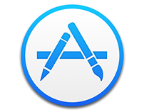

The OSX Menubar App
Download the source or install the GoGong Menubar app.
View on GitHub Download AppDesigner Templates
We’ve crafted some handsome templates for you to use. Go ahead and click 'Continue to layouts' to browse through them.
View on GitHub Download .zip